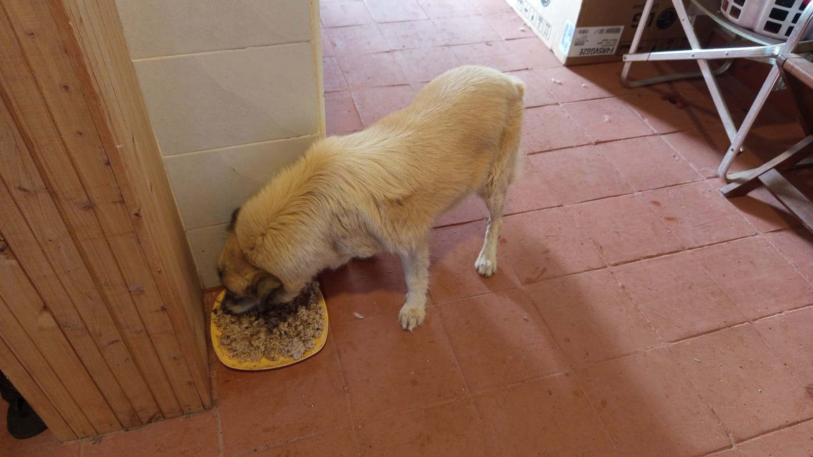

Mucheru World of Golf
Operations on Friday, 9th October 2026 registered extensive advancements across drainage hydraulics, precision agronomy, earthwork trenching, and dam infrastructure:
Mucheru World of Golf Operations Summary
Trench parameters were measured and excavation advanced for inlet and drainage lines serving greens and teeboxes; PVC pipes were connected to outlet drainage trenches for Greens 5, 8, and 14; the farm tractor hauled PVC pipe loads from the greenhouse; riversand was partially applied to Green 7 before muddy surrounds prompted a shift to Green 16 where sand was mostly applied; Dam 2 water inlet pipe was installed; and Dams 1 and 3 continued receiving water inflows.
- Trench Parameter Measurement & Excavation: In the morning, site supervisors and surveying crew measured trench dimensions (width, depth, and fall gradients) across the course. Manual crews with picks and shovels actively dug trenches designed for stormwater runoff drainage and incoming sprinkler irrigation lines serving putting greens and championship teeboxes.
- PVC Outlet Drainage Connected to Greens 5, 8 & 14: Long lines of heavy-duty orange PVC piping were laid and connected directly into the excavated outlet drainage trenches for Green 5, Green 8, and Green 14. These pipeline runs ensure positive gravity discharge of excess subsurface water from green basins to prevent waterlogging during rains.
- PVC Pipe Haulage by Farm Tractor: The farm tractor and red trailer were mobilized to transport bundles of orange PVC pipes from greenhouse storage across the property to active trenching corridors on the golf course.
- Riversand Spreading on Greens 7 & 16: Sand application commenced over the pumice layer on Green 7; however, surrounding red murram access tracks became too muddy for wheelbarrow passage, leading the crew to pause Green 7 after partial sand placement. The team shifted to Green 16, where wheelbarrow teams pushed sand across the pumice profile, completing the majority of the green area.
- Dam 2 Water Inlet Pipeline Installed: The dedicated black HDPE water inlet pipeline feeding Dam 2 was laid in its supply trench and fully connected. With installation complete, Dam 2 is ready to receive water inflows.
- Dams 1 & 3 Continuous Water Inflow: Pipeline inlets discharging into Dam 1 and Dam 3 continued active flow, steadily replenishing the course's irrigation storage reservoirs.
Comprehensive video field documentation capturing Friday's operations at Mucheru World of Golf: morning trench parameter measurements, excavation of inlet and drainage trenches for greens and teeboxes, laying and connecting orange PVC pipes to Greens 5, 8, and 14 outlet trenches, tractor pipe haulage, partial riversand spreading on Green 7, major riversand coverage on Green 16, installation of Dam 2 water inlet pipe, and ongoing inflow into Dams 1 and 3.
18-hole putting green status audit showing the latest work completed and current condition for each green as of October 9, 2026:
| Green | Current Technical & Agronomic State | Milestone Status |
|---|---|---|
| Green 1 | Surplus red soil (from 1 truck delivery) applied and leveled around collar and surrounds (Oct 2). | Surplus Red Soil Applied |
| Green 2 | Surplus red soil (from 1 truck delivery) applied and leveled around collar and surrounds (Oct 2). | Surplus Red Soil Applied |
| Green 3 | Surplus red soil (from 1 truck delivery) applied and leveled around collar and surrounds (Oct 2). | Surplus Red Soil Applied |
| Green 4 | Outlet drainage trench excavated across fairway corridor to safely discharge runoff (Oct 5). | Outlet Drainage Dug |
| Green 5 Today | Connected PVC pipes to green outlet drainage trench for excess runoff and sprinkler lines (Oct 9). | Drainage PVC Connected |
| Green 6 | Surplus red soil applied to raise and level surrounds (Sep 28). | Apron Raised • Palms Placed |
| Green 7 Today | Riversand partially applied over pumice bed; paused as surrounding murram soil was too muddy (Oct 9). | Riversand in Progress |
| Green 8 Today | Connected PVC pipes to outlet drainage trench to convey excess runoff and house supply lines (Oct 9). | Drainage PVC Connected |
| Green 9 | Surplus red soil (from 1 truck delivery) applied and leveled around collar and surrounds (Oct 2). | Surplus Red Soil Applied |
| Green 10 | Surplus red soil (from 1 truck delivery) applied and leveled around collar and surrounds (Oct 2). | Surplus Red Soil Applied |
| Green 11 | Riversand application in progress over pumice bed; partial coverage completed (Oct 3). | Riversand in Progress |
| Green 12 | Surplus red soil (from 1 truck delivery) applied and leveled around collar and surrounds (Oct 2). | Surplus Red Soil Applied |
| Green 13 | Surplus red soil spread around surrounds to raise and match green level (Sep 29). | Surplus Red Soil Applied |
| Green 14 Today | Connected PVC pipes to green outlet drainage trench to remove surplus stormwater (Oct 9). | Drainage PVC Connected |
| Green 15 | Riversand applied over pumice bed across most part of green (Oct 3). | Riversand Applied (Most Part) |
| Green 16 Today | Riversand applied over pumice bed across most part of green; application ongoing to completion (Oct 9). | Riversand in Progress |
| Green 17 | Surplus red soil spread around surrounds to raise and align levels (Sep 29). | Surplus Red Soil Applied |
| Green 18 | Surplus red soil spread and leveled around collar and surrounds (Sep 30). | Surplus Red Soil Applied |
Comprehensive 18-hole championship teebox platform audit tracking earthwork leveling, structural embankments, and playing corridor alignments as of October 9, 2026:
| Teebox | Current Technical & Earthwork State | Platform Status |
|---|---|---|
| Tee 1 | Championship launch platform completely reshaped, cut, and graded to design elevation using Backhoe Loader (Sep 24); received 1 lorry red soil delivery (Sep 26). | Platform Reshaped |
| Tee 2 | Playing launch platform completely reshaped, contoured, and graded using Backhoe Loader (Sep 24); received 1 lorry red soil delivery (Sep 26). | Platform Reshaped |
| Tee 3 | Playing launch platform completely reshaped, contoured, and graded using Backhoe Loader (Sep 24); received 1 lorry red soil delivery (Sep 26). | Platform Reshaped |
| Tee 4 | Championship launch platform completely reshaped, cut, and graded using Backhoe Loader (Sep 23); received 1 lorry red soil delivery (Sep 26). | Platform Reshaped |
| Tee 5 | Main perimeter drainage pipeline backfilled all the way past Maina's place (Oct 2). | Drainage Backfilled |
| Tee 6 | Precision leveling and compaction completed; fresh delivery of 1 lorry red loam topsoil unloaded at platform surrounds (Sep 26). | Red Soil In • Leveled |
| Tee 7 | Both number 7 teebox platforms actively reshaped, cut, and leveled by crew under Joe Kamau and supervisors (Oct 4). | Both Platforms Reshaped |
| Tee 8 | Graded, leveled, and contour-adjusted; fresh delivery of 1 lorry red loam topsoil unloaded directly on platform (Sep 26). | Red Soil In • Graded |
| Tee 9 | Playing platform leveled and surrounding perimeter ground graded (Sep 1); received 1 lorry red soil delivery (Sep 26). | Platform Leveled |
| Tee 10 | Graded and compacted platform serving the start of the back-nine playing corridor; received 1 lorry red soil delivery (Sep 26). | Platform Compacted |
| Tee 11 | Playing launch platform actively shaped, graded, and refined to final architectural contours and levels (Oct 8). | Shaped & Refined |
| Tee 12 | Both championship and forward platforms actively shaped, leveled, and refined to finished design elevation (Oct 8). | Shaped & Refined |
| Tee 13 | Playing platform earthworks completely finished, shaped, and refined to final design elevation and contours (Oct 7). | Finished & Refined |
| Tee 14 | Launch platform earthworks completely finished, shaped, and refined to final playing contour (Oct 7). | Finished & Refined |
| Tee 15 | Launch platform shaping completely finished; terrace cut to design elevation and precision leveled (Oct 6). | Platform Reshaped |
| Tee 16 | Surplus red soil moved onto platform; launch terrace completely reshaped and leveled (Oct 5). | Platform Reshaped |
| Tee 17 | Launch platform reshaped, cleared of brush, and graded to playing corridor alignment (Oct 6). | Platform Reshaped |
| Tee 18 | Championship tee platform leveled; perimeter approach cleared and graded (Sep 1); received 1 lorry red soil delivery (Sep 26). | Platform Leveled |
Operations Agronomy & Engineering Synthesis
Putting Greens & Hydraulic Progress: Orange PVC drainage pipes connected to outlet trenches on Greens 5, 8, and 14; trench parameters measured and network trenching underway for greens and teeboxes; riversand partially placed on Green 7 and mostly applied on Green 16; all 18 greens (100%) have subgrade foundations excavated and membrane lined; 100% have volcanic pumice layers compacted; Dam 2 water inlet pipe installed; active water replenishment continuing for Dams 1, 2, and 3.
Championship Teebox Platforms: Teeboxes 11, 12, 13, and 14 completely shaped, graded, and refined; drainage and water inlet trenches excavated connecting teebox and green zones; course playing corridors primed for grass planting.
Sequential photographic field documentation covering trench parameter measurement, drainage trench excavation, PVC pipe hauling and connection (Greens 5, 8 & 14), riversand spreading (Greens 7 & 16), and dam water inlet installations (Dams 1, 2 & 3):

Measuring Trench Parameters Across Course
Crew using tape measure to check trench width, depth, and fall alignment between greens and tees in the morning.

Manual Drainage Trench Excavation
Workers using picks and shovels to dig network trenches for green and teebox drainage and water supply.

Green 4 Fairway Trench Line
Aerial drone capture showing the extended drainage trench line running from Green 4 across the fairway corridor.

Green 8 Drainage Trench Route
High-altitude aerial view of Green 8 showing the drainage trench excavated across the subgrade profile towards the perimeter.

Green 8 Trenching Corridor Overview
Drone perspective showing the trench excavation alignment and pipe placement extending out from Green 8.

Farm Tractor Hauling PVC Pipes
Tractor and red trailer transporting a full load of orange PVC pipes from greenhouse storage to the golf site.

PVC Drainage Pipes Staged on Site
Stockpile of heavy-duty PVC drainage pipes delivered and staged along the green construction corridors.

PVC Pipe Jointing & Alignment
Plumbing crew jointing and assembling lengths of orange PVC pipes along the excavated trench line.

Laying PVC Pipe in Green 5 Trench
Orange PVC drainage pipe laid directly inside the deep drainage trench extending from Green 5.

Fitting PVC Outlet Pipe for Green 5
Workers aligning pipe gradients to ensure proper gravity fall for Green 5 stormwater runoff.

Green 5 PVC Pipeline Connection Aerial
Drone capture showing the continuous orange PVC pipeline laid in the trench beside Green 5 with laborers connecting sections.

Hauling Riversand Over Muddy Murram at Green 7
Worker pushing a wheelbarrow of riversand along wooden planks over wet, muddy murram surrounds at Green 7.

Green 7 Partial Riversand Coverage Aerial
Aerial drone view of Green 7 showing the upper portion covered in riversand before work was suspended due to muddy surrounds.

Green 7 Pumice Profile & Sand Pile
Ground view of the contoured pumice bed of Green 7 with large stockpiles of coarse riversand adjacent.

Green 7 Agronomic Subgrade View
Close-up perspective of the leveled pumice foundation and surrounding red soil shaping on Green 7.

Wheeling Riversand onto Green 16
Laborer wheeling riversand directly onto Green 16 after operations shifted from Green 7.

Spreading Sand Across Green 16 Pumice Bed
Crew manually distributing and raking riversand over the underlying compacted pumice foundation of Green 16.

Green 16 Riversand Mostly Applied Aerial
Drone capture of Green 16 showing roughly 80% riversand coverage across the green with the wheelbarrow team actively working.

Advanced Riversand Layer on Green 16
Ground-level progress view of Green 16 showing advanced sand coverage ready for leveling and final grading.

Dam 2 Water Inlet Pipeline Laid in Trench
Newly installed black HDPE inlet water pipe running through an excavated trench directly into the Dam 2 reservoir basin.

Dam 2 Reservoir & Water Inlet Overview
Dam 2 lined reservoir showing anchored perimeter polythene and the newly connected inlet supply pipeline.

Dam 2 Basin Aerial Perspective
Drone aerial capture of the Dam 2 basin with liner secured in anchor trenches, prepared to receive incoming water.

Dam 1 Water Inflow Progress Aerial
Aerial overview of Dam 1 reservoir showing steady inflow and rising water storage reserves.

Dam 3 Inflow Progress Drone Capture
Aerial overview of Dam 3 reservoir showing continuous water inflow through the supply pipeline.

Dam 3 Water Inlet Pipeline Flow
Ground perspective of the water inlet pipe actively discharging fresh water into the Dam 3 storage basin.

Dam 3 Reservoir Basin Overview
Wide drone angle of Dam 3 showing the water accumulation basin and surrounding course terrain.
Chaka Farms
Operations at Chaka Farms on Friday, 9th October 2026 registered major accomplishments across dairy production, canine behavioral conditioning, estate hydraulic management, and farm agronomy:
Chaka Farms Operations Summary
Dairy milking yielded 6.0 Litres gross with 100% mathematical reconciliation (5.0L commercial sales, 1.0L internal staff allocations; goat kids fully weaned); Willy supervised kennel manners, stall cleaning, paw command, and off-leash farm exercise; Ken operated an electric powered pump to clear floodwater from the farm island into the dam and supervised planting of Barleria hedge plants at Gate A; and Margaret and Monica worked with Kimondo digging planting holes, applying manure, and planting maize seeds.
- Reconciled Dairy Production (Kamandau): Morning milking yielded 3.5 Litres and evening milking yielded 2.5 Litres, totaling 6.0 Litres gross harvest. Commercial sales dispatches stood at 2.5L morning and 2.5L evening (5.0L daily total sold). Routine internal farm disbursements accounted for 1.0L (0.5L Gladys staff ration + 0.5L Maasai security ration), resulting in 100% accounting fidelity with zero discrepancy. Goat kids remain officially weaned (0.0L allocation).
- Canine Behavioral Conditioning & Off-Leash Walking (Willy): Willy conducted structured training sessions with the Canine Unit. Routines covered kennel manners (reinforcing patience and boundary respect at open stall doors), thorough stall sanitation, paw command practice, and guided off-leash walking exercise across farm fields to promote physical conditioning and responsiveness.
- Farm Island Flood Dewatering via Electric Pump (Ken): Heavy rainwater accumulation that had flooded the central farm island lawn around the trees and seating area was pumped out. Ken and his team set up a mobile electric-powered water pump mounted on a wheelbarrow chassis with a floating suction intake, actively pumping the floodwaters through discharge piping straight into the dam basin.
- Barleria Hedge Planting at Gate A (Ken): Ground preparation along Gate A was completed, and the team planted healthy Barleria flower hedge seedlings along the inner perimeter fence line to establish a vibrant, dense security border.
- Field Maize Planting & Manure Application (Margaret & Monica): Margaret and Monica performed general compound maintenance and advanced field agriculture. Working alongside Kimondo (who dug planting holes with a jembe), the ladies applied organic farmyard manure into each hole and planted maize seeds across the prepared plot.
Quantitative reconciliation of gross dairy harvest, commercial sales dispatches, and internal farm allocations for Friday, 9th October 2026:
| Production & Allocation Category | Morning Session | Evening Session | Daily Total | Accounting Classification |
|---|---|---|---|---|
| Commercial Milk Sales (Dispatched) | 2.5 L | 2.5 L | 5.0 L | Commercial Sales Outflow |
| Goat Kids Milk Ration | 0.0 L | — | 0.0 L | Weaned (Fully Grown & Independent) |
| Gladys Allocation (Staff) | 0.5 L | — | 0.5 L | Internal Farm Allocation (Staff) |
| Maasai Allocation (Security) | 0.5 L | — | 0.5 L | Internal Farm Allocation (Security) |
| Total Internal Farm Allocations | 1.0 L | Total Internal Outflow | ||
| Total Gross Cow Milk Harvested (Sales + Allocations) | 6.0 L | 100% Accounted Production (3.5L AM / 2.5L PM) | ||
📌 Ground Truth Accounting Note
In accordance with the estate milk reconciliation standard established on October 1st, Kamandau's recorded dispatches of 2.5L morning and 2.5L evening represent commercial milk sold (5.0L total). Internal disbursements comprise 0.5L morning staff ration for Gladys and 0.5L morning security ration for Maasai (1.0L total internal allocations). The goat kids are fully weaned and graze independently (0.0L allocation). Total gross cow milk harvested is exactly 6.0 Litres (3.5L morning harvest [2.5L sold + 1.0L internal allocations] and 2.5L evening harvest [2.5L sold]) with 100% accounting fidelity and zero discrepancy.
Daily behavioral training, kennel hygiene, off-leash farm exercise, and hydraulic island dewatering operations conducted on Friday, 9th October 2026:
- Kennel Manners & Boundary Conditioning (Willy): Working dogs practiced patience, remaining seated calmly inside open stall gates until given release cues, establishing sound boundary respect and handler attentiveness.
- Kennel Hygiene & Paw Command Drills: Complete washing and disinfection of indoor kennels were completed; dogs practiced the paw command calmly.
- Afternoon Off-Leash Farm Exercise: Dogs were guided on an energetic off-leash walk across open farm paddocks to encourage social manners, recall, and physical conditioning.
- Electric Pump Island Dewatering (Ken): Electric-powered water pump was deployed to eliminate standing rainwater floodwaters covering the central farm island lawn, discharging the water directly into the adjacent dam.
Willy conducting kennel manners, boundary control, and structured gate restraint drills with the Canine Unit, reinforcing calm demeanor and attentiveness.
Ken operating the mobile electric-powered pump with floating suction to remove standing rainwater floodwaters from the island lawn and discharge them into the dam.
Sequential photographic field documentation covering island floodwater removal, Barleria hedge planting at Gate A, and maize planting with manure application:

Rainwater Flooding on Farm Island Lawn
Rainwater pooling across the farm island lawn, submerging the grass around acacia trees and outdoor furniture.

Flooded Lawn & Island Canopy
Broad view of standing water across the island recreation area prior to the deployment of the electric pump.

Setting Up Electric Dewatering Pump
Field crew positioning the mobile electric water pump on the wheelbarrow chassis and connecting the discharge pipe.

Barleria Seedlings Staged at Gate A
Healthy Barleria nursery seedlings in black potting sleeves arranged along Gate A ready for planting.

Planting Barleria Hedge Along Fence
Workers digging a continuous planting trench and setting Barleria seedlings along the inner fence at Gate A.

Close-Up of Barleria Plant Installation
Close-up view of freshly set Barleria plants bedded into enriched red loam soil to form a dense boundary hedge.

Maize Planting & Manure Application in Farm Field
Kimondo digging planting holes with a jembe while Margaret and Monica apply organic farmyard manure and plant maize seeds.
Kabete Residence
Field operations at Kabete Residence on Friday, 9th October 2026 focused on civil structural carpentry, column formwork installation at the SQ outdoor fireplace, hydraulic water curing along the forest river retaining wall, and domestic pet welfare. Operational oversight and updates were shared by Njoki:
Kabete Residence Progress Summary
Construction crew offloaded a delivery of timber; carpenters cut marine board sheets for formwork; column formwork was fabricated, fitted, and installed at the SQ outdoor fireplace; masonry workers conducted water curing on the retaining wall in the forest river area; and pet care was provided for Ajabu and resident cats.
- Timber Delivery Offloading: A fresh consignment of structural building timber was delivered on site via pick-up truck. Laborers offloaded and neatly stacked timber planks and studs near the carpentry workstation for immediate shuttering use.
- Marine Board Cutting for Formwork: Carpenters measured and accurately cut marine board sheets and timber battens to fabricate formwork casings for structural reinforced concrete columns.
- SQ Fireplace Column Formwork Fitting & Installation: Masons and carpenters actively fitted and erected timber column formwork casings at the SQ outdoor fireplace. Formwork boxes were aligned plumb against the stone masonry, secured with horizontal cross-battens, and firmly braced with timber props in preparation for concrete casting.
- Retaining Wall Water Curing in River Forest Area: Thorough water curing was carried out along the heavy-duty stone masonry retaining wall and reinforced concrete column structures in the forest section bordering the river. The wall surfaces and weep hole zones were kept saturated to ensure complete cement hydration and structural strength.
- Domestic Pet Welfare (Ajabu & Resident Cats): Complete pet care routines were maintained for Kabete's domestic pets. Ajabu the Golden Retriever enjoyed outdoor exercise and relaxed comfortably on the lawn. Resident cats (Reo, Mocha, and Aiko) were fed together indoors and remained in excellent health.
Sequential photographic field documentation covering timber offloading, marine board cutting, SQ fireplace column formwork fabrication and installation, river forest retaining wall curing, and domestic pets:

Offloading Timber Delivery from Pick-Up Truck
Workers offloading bundles of structural timber planks from the pick-up truck at Kabete Residence.

Stacking Timber Planks on Site
Planks stacked neatly near the workshop area ready for column formwork fabrication.

Timber Cargo Unloading Progress
Laborers completing offloading of construction timber for the SQ fireplace and structural works.

Cutting Marine Board Sheets
Carpenter accurately cutting marine plywood sheets to build smooth formwork panels for concrete columns.

Formwork Panel Fabrication for SQ Columns
Assembled timber formwork shutter panels with reinforcing cleats prepared for erection at the SQ outdoor fireplace.

Positioning Column Formwork at SQ Fireplace
Carpenters fitting and aligning column shutter boxes against the stone masonry wall at the SQ fireplace.

Vertical Column Formwork Erected & Plumbed
Vertical timber column casing set in place against the masonry wall, checked for plumb and alignment.

Braced Column Shuttering at Fireplace
Timber column box braced with diagonal props and tied securely to resist concrete casting pressures.

Column Formwork Casing & Rebar Enclosure
Close-up view of column formwork enclosing internal steel reinforcement cages ready for pouring.

Formwork Installation at SQ Fireplace Wing
Structural carpentry crew completing the erection and anchoring of column formwork at the SQ fireplace.

Retaining Wall Water Curing at River Area
Stone retaining wall with built-in PVC weep holes undergoing water curing along the forest river boundary.

Saturating Retaining Wall Masonry Courses
Masonry joints and stone courses kept continuously damp to support cement mortar strength and durability.

Curing Columns for Retaining Wall
Water hydration applied to reinforced concrete column structures along the river forest retaining wall.

Retaining Structure Curing Inspection
Hydration curing verified across column segments and stone masonry facing near the river bank.

Ajabu Resting Contentedly Outdoors
Ajabu the Golden Retriever relaxing comfortably on the lawn following his daily outdoor exercise.

Resident Cats Reo, Mocha & Aiko Indoors
Resident cats Reo, Mocha, and Aiko gathered together peacefully indoors during feeding time.
Amani Cottage
Daily property maintenance and landscaping operations at Amani Cottage on Friday, 9th October 2026 maintained pristine grounds presentation and horticultural vitality:
Amani Cottage Progress Summary
Edwin swept compound grounds, walkways, and entrance driveways, collecting fallen leaves and litter; planted yucca plants along garden borders; and tracked water utility consumption at 0.3 m³ for the day.
- Grounds Sweeping & Litter Collection (Edwin): Edwin thoroughly swept the cottage compound, clearing entrance pathways, front lawns, and paved stepping stone walkways of dry leaves, twigs, and fallen organic litter.
- Yucca Plant Landscaping (Edwin): New yucca plants were planted along garden margins and border beds, enriching the ornamental landscaping around the cottage grounds.
- Utility Water Consumption Monitoring: Water utility usage was tracked and recorded via meter inspection at 0.3 m³ consumed for daily grounds maintenance and domestic cottage needs.
Sequential photographic field documentation covering cottage compound sweeping, garden landscaping, and water utility monitoring:
compound_01.jpeg)
Pristine Cottage Grounds & Swept Lawn
Broad view of Amani Cottage front lawn and stepping stone pathway cleared of fallen leaves and litter.
compound.jpeg)
Swept Compound Grounds & Shed Surrounds
Lawn area and garden borders around the timber shed following sweeping and yucca planting.
compound_02.jpeg)
Cleaned Garden Lawn & Tree Canopy
Neatly maintained cottage grounds showing swept turf beneath the mature woodland canopy.
.jpeg)
Water Meter Consumption Reading (0.3 m³)
Close-up inspection of the Iberconta water meter recording 0.3 m³ consumed for Friday's property routines.
_01.jpeg)
Water Utility Meter Inspection
Verification inspection of the water supply line and meter tracking daily cottage utility usage.